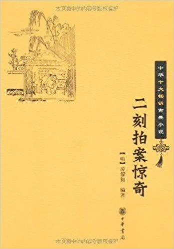

卷二十八程朝奉单遇无头妇王通判双雪不明冤
卷二十八程朝奉单遇无头妇王通判双雪不明冤#

人命关天地，从来有报施。
其建多幻处，造物显其奇。
话说湖广黄州府有一地方，名曰黄圻缭，最产得好瓜。有一老圃，以瓜为业，时时手自灌溉，爱惜倍至。圃中诸瓜，独有一颗结得极大，块垒如斗。老圃特意留着，待等味熟，要献与豪家做孝顺的。一日，手中持了锄头，去圃中掘菜，忽见一个人掩掩缩缩在那瓜地中。急赶去看时，乃是一个乞丐，在那里偷瓜吃，把个篱芭多扒开了，仔细一认，正不见了这颗极大的，已被他打碎，连瓤连子，在那里乱啃。老圃见偏摘掉了加意的东西，不觉怒从心上，恶向胆边生，提起手里锄头，照头一下。却元来不禁打，打得脑浆迸流，死于地下。老圃慌了手脚，忙把锄头锄开一楞地来，把尸首埋好，上面将泥铺平。且喜是个乞丐，并没个亲人来做苦主讨命，竟没有人知道罢了。
到了明年，其地上瓜愈盛，仍旧一颗独结得大，足抵得三四个小的，也一般加意爱惜，不肯轻采。偶然县官衙中有个害热渴的，想得个大瓜清解。各处买来，多不中意，累那买办衙役比较了几番。衙役急了，四处寻访。见说老圃瓜地专有大瓜，遂将钱与买。进圃选择，果有一瓜，比常瓜大数倍。欣然出了十个瓜的价钱，买了去送进衙中。衙中人大喜，见这个瓜大得导常，集了众人共剖。剖将开来，瓤水乱流。多嚷道：“可惜好大瓜，是烂的了。”仔细一看，多把舌头伸出，半响缩不进去。你道为何？元来满桌都是鲜红血水，满鼻是血腥气的。众人大惊，禀知县令。县令道：“其间必有冤事。”遂叫那买办的来问道：“这瓜是那里来的？”买办的道：“是一个老圃家里地上的。”县令道：“他怎生法儿养得这瓜恁大？唤他来，我要问他。”
买办的不敢稽迟，随去把个老圃唤来当面。县令问道：“你家的瓜，为何长得这样大？一圃中多是这样的么？”老圃道：“其余多是常瓜，只有这颗，不知为何恁大。”县令道：“往年也这样结一颗儿么？”老圃道：“去年也结一颗，没有这样大，略比常瓜大些。今年这一颗大得古怪，自来不曾见这样。”县令笑道：“此必异种，他的根毕竟不同，快打轿，我亲去看。”当时抬至老圃家中，叫他指示结瓜的处所。县令教人取锄头掘将下去，看他根是怎么样的。掘不深，只见这瓜的根在泥中土，却象种在一件东西里头的。扒开泥士一看，乃是个死人的口张着，其根直在里面出将起来。众人发声喊，把锄头乱挖开来，一个死尸全见。县令叫挖开他口中，满口尚是瓜子。县令叫把老圃锁了，问其死尸之故。老圃赖不得，只得把去年乞丐偷瓜吃。误打死了埋在地下的事，从实说了。县令道：
“怪道这瓜瓤内的多是血水，元来是这个人冤气所结。他一时屈死，膏液未散，滋长这一棵根苗来。天教我衙中人渴病，拣选大瓜，得露出这一场人命。乞丐虽贱，生命则同，总是偷窃，不该死罪，也要抵偿。”把老圃问成殴死人命绞罪，后来死于狱中。
可见人命至重，一个乞丐死了，又没人知见的，埋在地下，已是一年，又如此结出异样大瓜来弄一个明白，正是天理昭彰的所在。而今还有一个，因这一件事，露出那一件事来，两件不明不白的官司，一时显露。说着也古怪。有诗为证：
从来见说没头事，此事没头真莫猜。
及至有时该发露，一头弄出两头来。
话说国朝成化年间，直隶徽州府有一个富人姓程。他那边土俗，但是有资财的，就呼为朝奉。盖宋时有朝奉大夫，就象称呼富人为员外一般，总是尊他。这个程朝奉拥着巨万家私，真所谓饱暖生淫欲，心里只喜欢的是女色。见人家妇女生得有些姿容的，就千方百计，必要弄他到手才住。随你费下几多东西，他多不吝，只是以成事为主。所以花费的也不少，上手的也不计其数。自古道天道祸淫，才是这样贪淫不歇，便有希奇的事体做出来，直教你破家辱身，急忙分辨得来，已吃过大亏了，这是后话。
且说徽州府岩子街有一个卖酒的，姓李叫做李方哥。有妻陈氏，生得十分娇媚，丰采动人。程朝奉动了火，终日将买酒为由，甜言软语哄动他夫妻二人。虽是缠得熟分了，那陈氏也自正正气气，一时也勾搭不上。程朝奉道：“天下的事，惟有利动人心。这家子是贫难之人，我拼舍着一主财，怕不上我的钩？私下钻求，不如明买。”一日对李方哥道：“你一年卖酒得利多少？”李方哥道：“靠朝奉福荫，借此度得夫妻两口，便是好了。”程朝奉道：“有得嬴余么？”李方哥道：“若有得一两二两嬴余，便也留着些做个根本，而今只好绷绷拽拽，朝升暮合过去，那得嬴余？”程朝奉道：“假如有个人帮你十两五两银子做本钱，你心下如何？”李方哥道：“小人若有得十两五两银子，便多做些好酒起来，开个兴头的糟坊。一年之间度了口，还有得多。只是没寻那许多东西，就是有人肯借，欠下了债要赔利钱，不如守此小本经纪罢了。”朝奉道：“我看你做人也好，假如你有一点好心到我，我便与你二三十两，也不打紧。”李方哥道：“二三十两是朝奉的毫毛，小人得了却一生一世受用不尽了。只是朝奉怎么肯？”朝奉道：
“肯到肯，只要你好心。”李方哥道：“教小人怎么样的才是好心？”朝奉笑道：“我喜欢你家里一件物事，是不费你本钱的，我借来用用，仍旧还你。若肯时，我即时与你三十两。”李方哥道：“我家里那里有朝奉用得着的东西？况且用过就还，有甚么不奉承了朝奉，却要朝奉许多银子？”朝奉笑道：“只怕你不肯。你肯了，又怕你妻子不舍得。你且两个去商量一商量，我明日将了银子来，与你现成讲兑。今日空口说白话，未好就明说出来。”笑着去了。
李方哥晚上把这些话与陈氏说道：“不知是要我家甚么物件。”陈氏想一想道：“你听他油嘴，若是别件动用物事，又说道借用就还的，随你奢遮宝贝，也用不得许多贳钱，必是痴心想到我身上来讨便宜的说话了。你男子汉放些主意出来，不要被他腾倒。”李方哥笑笑道：“那有此话！”隔了一日，程朝奉果然拿了一包银子，来对李方哥道：“银子已现有在此，打点送你的了。只看你每意思如何。”朝奉当面打开包来，白灿灿的一大包。李方哥见了，好不眼热，道：“朝奉明说是要怎么？小人好如命奉承。”朝奉道：“你是个晓事人，定要人说个了话，你自想家里是甚东西是我用得着的，又这般值钱就是了。”李方哥道：“教小人没想处，除了小人夫妻两口身子外，要值上十两银子的家伙，一件也不曾有。”朝奉笑道：“正是身上的，哪个说是身子外边的？”李方哥通红了脸道：“朝奉没正经！怎如此取笑？”朝奉道：“我不取笑，现钱买现货，愿者成交。若不肯时，也只索罢了，我怎好强得你？”说罢，打点袖起银子了。自古道：“清酒红人面，黄金黑世心。”李方哥见程朝奉要收拾起银子，便呆着眼不开口，尽有些沉吟不舍之意。程朝奉早已瞧科，就中取着三两多重一锭银子，塞在李方哥袖子里道：“且拿着这锭去做样，一样十锭就是了。你自家两个计较去。”李方哥半推半就的接了。程朝奉正是会家不忙，见接了银子，晓得有了机关，说道：
“我去去再来讨回音。”
李方哥进到内房与妻陈氏说道：“果然你昨日猜得不差，元来真是此意。被我抢白了一顿，他没意思，把这锭银子作为陪礼，我拿将来了。”陈氏道：“你不拿他的便好，拿了他的，已似有肯意了。他如何肯歇这一条心？”李方哥道“我一时没主意拿了，他临去时就说‘象得我意，十锭也不难。’我想我与你在此苦挣一年，挣不出几两银子来。他的意思，倒肯在你身上舍主大钱。我每不如将计就计哄他，与了他些甜头，便起他一主大银子，也不难了。也强如一盏半盏的与别人论价钱。”李方哥说罢，就将出这锭银子放在桌上。陈氏拿到手来看一看，道：“你男子汉见了这个东西，就舍得老婆养汉了？”李方哥道：“不是舍得，难得财主家倒了运来想我们，我们拚忍着一时羞耻，一生受用不尽了。而今总是混帐的世界，我们又不是甚么阀阅人家，就守着清白，也没人来替你造牌坊，落得和同了些。”陈氏道：“是倒也是，羞人答答的，怎好兜他？”李方哥道：“总是做他的本钱不着，我而今办着一个东道在房里，请他晚间来吃酒，我自到外边那里去避一避。等他来时，只说我偶然出外就来的，先做主人陪他，饮酒中间他自然撩拨你。你看着机会，就与他成了事。等得我来时，事己过了。可不是不知不觉的落得赚了他一主银子？”陈氏道：“只是有些害羞，使不得。”李方哥道：“程朝奉也是一向熟的，有甚么羞？你只是做主人陪他吃酒，又不要你去兜他。只看他怎么样来，才回答他就是，也没甚么羞处。”陈氏见说，算来也不打紧的，当下应承了。
李方哥一面办治了东道，走去邀请程朝奉。说道：“承朝奉不弃，晚间整酒在小房中，特请朝奉一叙，朝奉就来则个。”程朝奉见说，喜之不胜道：“果然利动人心，他已商量得情愿了。今晚请我，必然就成事。”巴不得天晚前来赴约。从来好事多磨，程朝奉意气洋洋走出街来。只见一般儿朝奉姓汪的，拉着他水口去看甚么新来的表子王大舍，一把拉了就走。程朝奉推说没工夫得去，他说“有甚么贵干？”程朝奉心忙里，一时造不出来。汪朝奉见他没得说，便道：“原没事干，怎如此推故扫兴？”不管三七二十一，同了两三个少年子弟，一推一攘的，牵的去了。到了那里，汪朝奉看得中意，就秤银子办起东道来，在那里人马。程朝奉心上有事，被带住了身子，好不耐烦。三杯两盏，逃了席就走，已有二更天气。此时李方哥已此寻个事由，避在朋友家里了，没人再来相邀的。程朝奉径目急急忙忙走到李家店中。见店门不关，心下意会了。进了店，就把门拴着。那店中房子苦不深邃，抬眼望见房中灯烛明亮，酒肴罗列，悄无人声。走进看时，不见一个人影。忙把桌上火移来一照，大叫一声：“不好了！”正是：
分开八片顶阳骨，倾下一桶雪水来。程朝奉看时，只见满地多是鲜血，一个没头的妇人淌在血泊里，不知是甚么事由。惊得牙齿捉对儿厮打，抽身出外，开门便走。到了家里，只是打困，蹲站不定，心头丕丕的跳。晓得是非要惹到身上，一味惶惑不题。
且说李方哥在朋友家里捱过了更深，料道程朝奉与妻子事体已完，从容到家，还好趁吃杯儿酒。一步步踱将回来。只见店门开着，心里道：“那朝奉好不精细，既要私下做事，门也不掩掩着。”走到房里，不见甚么朝奉，只是个没头的尸首躺在地下。看看身上衣服，正是妻子。惊得乱跳道：“怎的起？怎的起？”一头哭，一头想道：“我妻子已是肯的，有甚么言语冲撞了他，便把来杀了？须与他讨命去！”连忙把家里收拾干净了，锁上了门，径奔到朝奉家门。程朝奉不知好歹，听得是李方哥声音，正要问他个端的，慌忙开出门来。李方哥一把扭住道：“你干的好事！为何把我妻子杀了？”程朝奉道：“我到你家，并不见一人，只见你妻子已杀倒在地，怎说是我杀了？”李方哥道：“不是你是谁？”程朝奉道：“我心里爱你的妻子，若是见了，奉承还恐不及，舍得杀他？你须访个备细，不要冤我！”李方哥道：“好端端两口住在家里，是你来起这些根由，而今却把我妻子杀了，还推得那个？和你见官去，好好还我个人来！”
两下你争我嚷，天已大明。结扭了一直到府里来叫屈。府里见是人命事，淮了状。发与三府王通判审问这件事。王通判带了原、被两人，先到李家店中相验尸首。相得是个妇人身体，被人用刀杀死的，现无头颅。通判着落地方把尸盛了。带原、被告到衙门来。先问李方哥的口词，李方哥道：“小人李方，妻陈氏，是开酒店度日的。是这程某看上了小人妻子，乘小人不在，以买酒为由来强奸他。想是小人妻子不肯，他就杀死了。”通判问“程某如何说？”程朝奉道：“李方夫妻卖酒，小人是他的熟主顾。李方昨日来请小人去吃酒，小人因有事去得迟了些。到他家里，不见李方，只见他妻子不知被何人杀死在房。小人慌忙走了家来，与小人并无相干。”通判道：“他说你以买酒为由去强奸他，你又说是他请你到家，他既请你，是主人了，为何他反不在家？这还是你去强奸是真了。”程朝奉道：“委实是他来请小人，小人才去的。当面在这里，老爷问他，他须赖不过。”李方道：“请是小人请他的，小人未到家，他先去强奸，杀了人了。”王通判道：“既是你请他，怎么你未到家，他到先去行奸杀人？你其时不来家做主人，到在那里去了？其间必有隐情。”取夹棍来，每人一夹棍，只得多把实情来说了。李方哥道：“其实程某看上了小人妻子，许了小人银两，要与小人妻子同吃酒。小人贪利，不合许允，请他吃酒是真。小人怕碍他眼，只得躲过片时。后边到家，不想妻子被他杀死在地，他逃在家里去了。”程朝奉道：“小人喜欢他妻子，要营勾他是真。他已自许允请小人吃酒了，小人为甚么反要杀他？其实到他家时，妻子已不知为何杀死了。小人慌了，走了回家，实与小人无干。”通判道：“李方请吃酒卖奸是真，程某去时，必是那妇人推拒，一时杀了也是真。平白地要谋奸人妻子，原不是良人行径，这人命自然是程某抵偿了。”程朝奉道：
“小人不合见了美色，郎起贪心，是小人的罪了。至于人命，委实不知。不要说他夫妇商同请小人吃酒，已是愿从的了。即使有些勉强，也还好慢慢央求，何至下手杀了他？”王通判恼他奸淫起祸，那里听他辨说？要把他问个强奸杀人死罪。却是死人无头，又无行凶器械，成不得招。责了限期，要在程朝奉身上追那颗头出来。正是：
官法如炉不自由，这回惹着怎干休？
方知女色真难得，此日可来美妇头？
程朝奉比过几限，只没寻那颗头处。程朝奉诉道：“便做道是强奸不从，小人杀了，小人藏着那颗头做甚么用，在此挨这样比较？”王通判见他说得有理，也疑道：“是或者另有人杀了这妇人，也不可知。”且把程朝奉与李方哥多下在监里了，便叫拘集一千邻里人等，问他事体根由与程某杀人真假。邻里人等多说：
“他们是主顾家，时常往来的，也未见甚么奸情事。至于程某是个有身家的人，贪淫的事或者有之，众来也不曾见他做甚么凶恶歹事过来。人命的事，未必是他。”通判道：“既未必是程某，你地方人必晓得李方家的备细，与谁有仇，那处可疑，该推详得出来。”邻里人等道：“李方平日卖酒，也不见有甚么仇人。他夫妻两口做人多好，平日与人斗口的事多没有的。这黑夜不知何人所杀，连地方人多没猜处。”通判道：“你们多去外边访一访。”
众人领命正要走出，内中一个老者走上前来禀道：“据小人愚见，猜着一个人，未知是否。”通判道：“是那个？”只因说出这个人来，有分交：乞化游僧，明投三尺之法；沉埋朽骨，趁白十年之冤。正是善恶到头终有报，只争来早与来迟。老者道：“地方上向有一个远处来的游僧，每夜敲梆高叫，求人布施，已一个多月了。自从那夜李家妇人被杀之后，就不听得他的声响了。若道是别处去了，怎有这样恰好的事？况且地方上不曾见有人布施他的，怎肯就去。这个事着实可疑。”通判闻言道：“杀人作歹，正是野僧本事，这疑也是有理的。只那寻这个游僧处？”老者道：“重赏之下，必有勇夫。老爷唤那程某出来说与他知道，他家道殷富，要明白这事，必然不吝重赏。这游僧也去不久，不过只在左近地方，要访着他也不难的。”通判依言，狱中带出程朝奉来，把老者之言说与他。程朝奉道：“有此疑端，便是小人生路。只求老爷与小人做主，出个广捕文书，着落几个应捕四外寻访。小人情愿立个赏票，认出谢金就是。”当下通判差了应捕出来，程朝奉托人邀请众应捕说话，先送了十两银子做盘费。又押起三十两，等寻得着这和尚即时交付，众应捕应承去了。
元来应捕党与极多，耳目最众，但是他们上心的事，没有个访拿不出的。见程朝奉是个可扰之家，又兼有了厚赠，怎不出力？不上一年，已访得这叫夜僧人在宁国府地方乞化，夜夜街上叫了转来，投在一个古庙里宿歇。众应捕带了一个地方人，认得面貌是真，正是岩子镇叫夜的了。众应捕商量道：“人便是这个人了，不知杀人是他不是他。就是他了，没个凭据，也不好拿得他，只可智取。”算计去寻一件妇人衣服，把一个少年些的应捕打扮起来，装做了妇人模样。一同众人去埋伏在一个林子内，是街上回到古庙必经之地。守至更深，果然这僧人叫夜转来。捧了梆，正自独行，林子里假做了妇人，低声叫道：“和尚，还我头来！”初时一声，那僧人已吃了一惊，立定了脚。昏黑之中，隐隐见是个穿红的妇人，心上虚怯不过了。只听得一声不了，又叫：“和尚，还我头来！”连叫不止。那僧人慌了，颤驾驾的道：“头在你家上三家铺架上不是？休要来缠我！”众人听罢，情知杀人事已实，胡哨一声，众应捕一齐钻出，把个和尚捆住，道：“这贼秃！你岩子镇杀了人，还躲在这里么？”先是顿下马威打软了，然后解到府里来。
通判问应捕如何拿得着他，应捕把假装妇人吓他、他说出真情才擒住他的话禀明白了。带过僧人来，僧人明知事已露出，混赖不过，只得认道：“委实杀了妇人是的。”通判道：“他与你有甚么冤仇，杀了他？”僧人道：“并无冤仇，只因那晚叫夜，经过这家门首。见店门不关，挨身进去，只指望偷盗些甚么。不晓得灯烛明亮，有一个美貌的妇人盛装站立在床边，看见了不由得心里不动火，抱住求奸。他抵死不肯，一时性起，拔出戒刀来杀了，提了头就走。走将出来才想道，要那头做甚么？其时把来挂在上三家铺架上了。只是恨他那不肯，出了这口气。当时连夜走脱此地，而今被拿住，是应得偿他命的，别无他话。”通判就出票去提那上三家铺上人来，问道：“和尚招出人头在铺架上，而今那里去了？”辅上人道：“当时实有一个人头挂在架上，天明时见了，因恐怕经官受累，悄悄将来移上前去十来家赵大门首一棵树上挂着。已后不知怎么样了。”通判差人押了这三家铺人来提赵大到官。赵大道：“小人那日蚤起，果然见树上挂着一颗人头。心中惊是惧，思要首官，诚恐官司牵累，当下悄地拿到家中，埋在后园了。”通判道：“而今现在那里么？”赵大道：“小人其时就怕后边或有是非，要留做证见，埋处把一棵小草树记认着的，怎么不现在？”通判道：“只怕其间有诈伪，须得我亲自去取验。”
通判即时打轿，抬到赵大家里。叫赵大在前引路，引至后园中，赵大指着一处道：“在这底下。”通判叫从人掘将下去，刚钯得土开，只见一颗人头连泥带土，毂碌碌滚将出来。众人发声喊道：“在这里了！”通判道：“这妇人的尸首，今日方得完全。”从人把泥土拂去，仔细一看，惊道：“可又古怪！这妇人怎生是有髭须的？”送上通判看时，但见这颗人头：双眸紧闭，一口牢关。颈子上也是刀刃之伤，嘴儿边却有须髯之覆。早难道骷髅能作怪，致令得男女会差池？王通判惊道：“这分明是一个男子的头，不是那妇人的了！这头又出现得诈怪，其中必有跷蹊。”喝道：“把赵大锁了！”寻那赵大时，先前看见掘着人头不是妇人的，已自往外跑了。王通判就走出赵大前边屋里，叫拾张桌儿做公座坐了。带那赵大的家属过来，且问这颗人头的事。赵大妻子一时难以支吾，只得实招道：
“十年前赵大曾有个仇人姓马，被赵大杀了，带这头来埋在这里的。”通判道：
“适才赵大在此，而今躲在那里了？”妻子道：“他方才见人头被掘将来，晓得事发，他一径出门，连家里多不说那里去了。”王通判道：“立刻的事，他不过走在亲眷家里，料去不远。快把你家甚么亲眷住址，一一招出来。”妻子怕动刑法，只得招道：“有个女婿姓江，做府中令史，必是投他去了。”遇到即时差人押了妻子，竟到这江史令家里来拿，通判坐在赵大家里立等回话。果然：瓮中捉鳖，手到拿来。
且说江令史是衙门中人，晓得利害。见丈人赵大急急忙忙走到家来，说道“是杀人事发，思要藏避。”令史恐怕累及身家，不敢应承，劝他往别处逃走。赵大一时未有去向，心里不决。正踌躇间，公差已押着妻子来要人了。江令史此时火到身上，且自图灭熄，不好隐瞒，只得付与公差，仍带到赵大自己家里来。妻子路上已自对他说道：“适才老爷问时，我已实说了。你也招了罢，免受痛苦。”赵大见通判时，果然一口承认。通判问其详细，赵大道：“这姓马的先与小人有些仇隙，后来在山路中遇着，小人因在那里砍柴，带得有刀在身边，把他来杀了。恐怕有人认得，一时传遍，这事就露出来，所以既剥了他的衣服，就割下头来藏在家里。把衣服烧了，头埋在园中。后来马家不见了人，寻问时，只见有人说山中有个死尸，因无头的，不知是不是，不好认得。而今事已经久，连马家也不提起了。这埋头的去处，与前日妇人之头相离有一丈多地。只因这个头在地里，恐怕发露，所以前日埋那妇人头时，把草树记认的。因为隔得远，有胆气掘下去。不知为何，一掘到先掘着了。这也是宿世冤业，应得填还。早知如此，连那妇人的头也不说了。”通判道：“而今妇人的头，毕竟在那里？”赵大道：“只在那一块，这是记认不差的。”通判又带他到后园，再命从人打旧掘处掘下去，果然又掘出一颗头来。认一认，才方是妇人的了。通判笑道：“一件人命却问出两件人命来，莫非天意也！”
锁了赵大，带了两颗人头，来到府中，出张牌去唤马家亲人来认。马家儿子见说，才晓得父亲不见了十年，果是被人杀了，来补状词，王通判谁了。把两颗人头，一颗给与马家埋葬，一颗唤李方哥出来认看，果是其妻的了。把叫夜僧与赵大各打三十板，多问成了死罪。程朝奉不合买好，致死人命，问成徒罪，折价纳赎。李方哥不合卖奸，问杖罪的决。断程朝奉出葬埋银六两，给与李方哥葬那陈氏。三家铺的人不合移尸，各该问罪，因不是这等，不得并发赵大人命，似乎天意明冤，非关人事，释罪不究。
王通判这件事问得清白，一时清给了两件没头事，申详上司，各各称奖，至今传为美谈。只可笑程朝奉空想一人妇人，不得到手，枉葬送了他一条性命，自己吃了许多惊恐，又坐了一年多监，费掉了百来两银子，方得明白，有甚便宜处？那陈氏立个主意不从夫言，也不见得被人杀了。至于因此一事，那赵大久无对证的人命，一并发觉，越见得天心巧处。可见欺心事做不得一些的。有诗为证：
冶容诲淫从古语，会见金夫不自主。
称觞已自不有躬，何怪启宠纳人侮。
彼黠者徒恣强暴，将此头颅向何许？
幽兔郁积十年余，彼处有头欲出土。